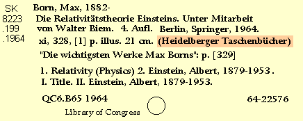

Copy: Series (4xx, 8xx)

490 0 Heidelberger Taschenbücher
Heidelberger Taschenbücher
Change all 4xx fields to 490 0
and delete all 8xx fields.
- In the case of an analytic, trace the form given in parentheses as a 440.
- Eliminate "Half title" phrase which sometimes precedes series statement.
- Eliminate "His", "Her", "Its", "Their" phrase also.
Go back to: Physical Description
Continue with: Notes